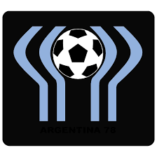

siguiente veremos las cantitdades de copas de la seleccion argentina a lo largo de la historia
- 
Mundial 78
Esta copa del mundo fue ganada en el mundial de 1978, este mismo fue organizado por el pais de Argentina,
la cual el pais local fue el ganador de esta, ganandole por 3-1 a la seleccin holandesa
-
Mundial 1986
Esta copa del mundo fue organizada en el pais de Mexico, la cual Argentina se quedo con este campeonato
llegando a la final y ganandole por 3-2 a loa seleccion alemana
-
Mundial 2022
Esta copa del mundo fue organizada por el pais de Qatar en el año 2023, la cual Argentina se quedo con el
campeonato llegando a la final y ganandole por tanda de penales a la seleccion francesa por 4-2 en penales
volver a la pagina